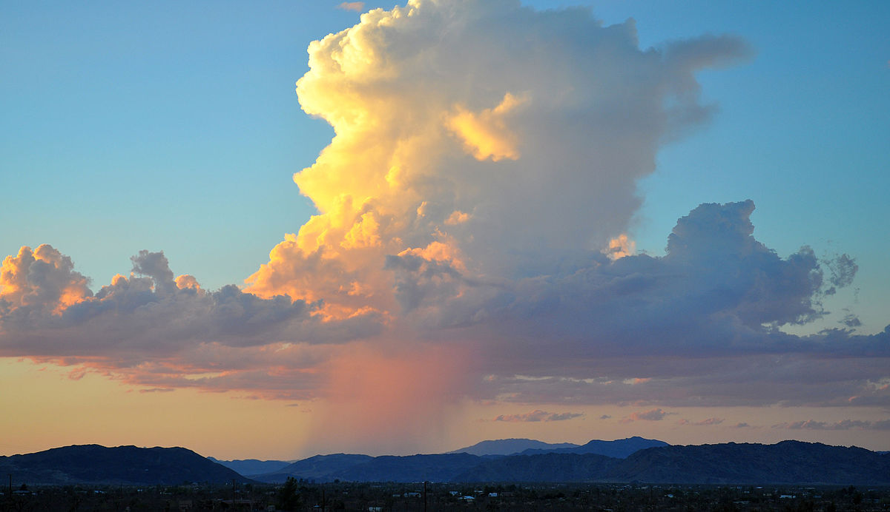
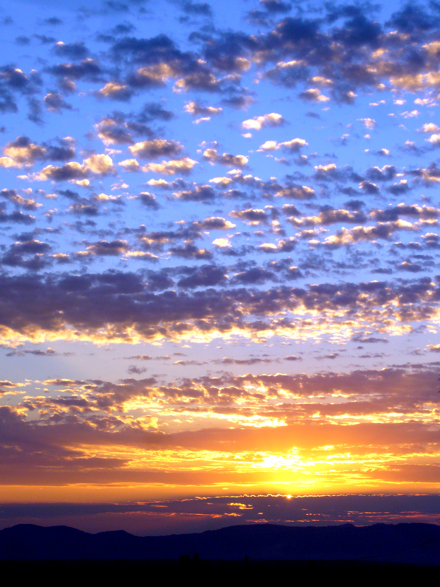
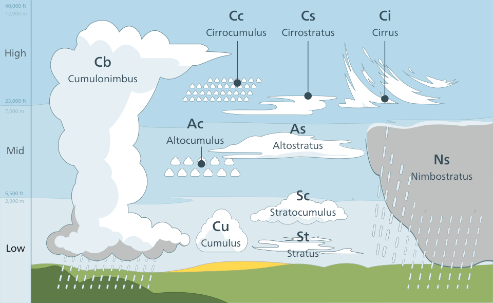

So, this is my first ever website! This is all pretty exciting. As for what I want to turn this website into, I have no idea. Maybe make a website that will be all about clouds. Clouds are cool.

Clouds appear white because of scattering. The droplets in clouds are big compared to the wavelength of light, so all wavelengths scatter the same. It's a different story for the scattering of light from molecules of air in the atmosphere.
This is why light scattered by clouds takes on the same color as the incoming light. For example, clouds will appear white or gray at midday and orange or red at sunrise or sunset. In this way, clouds act as a screen on which nature's colors are painted.
